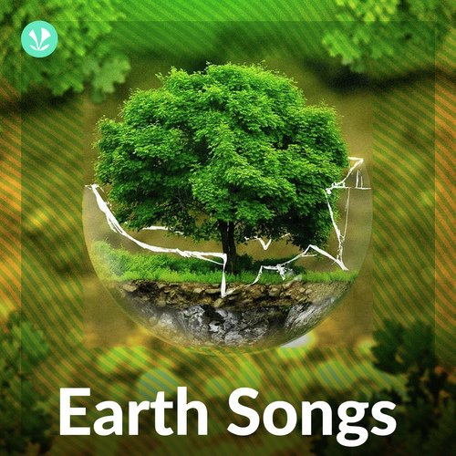
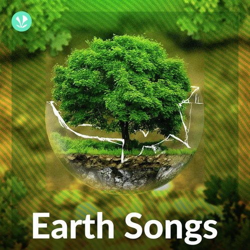

'Earth Song' by Michael Jackson
BEFORE LISTENING
LISTENING PART 1
Task 1 :Discuss the following questions.
1. What environmental problems do you think exist in the world today?
2. How do you feel about the state of the environment and social issues?
3. Are there any songs you know that talk about these topics?
Task 2 :Brainstorm 10 words or phrases related to environmental and social issues.
Write your responses in the box. This will help you connect your thoughts to the themes in the song.
Task 3 :Read the words and their meanings.
weeping - shedding tears or crying
pledge - to formally promise to give or do something
apathy - the feeling of not being interested in or enthusiastic about something, or things in general
ravaging - to damage something badly
holy - good in a moral and religious way
creed - a set of principles or religious beliefs
What about sunrise?
What about rain?
What about all the things
That you said we were to gain?
What about killing fields?
Is there a time?
What about all the things
That you said was yours and mine?
Did you ever stop to notice
All the blood we've shed before?
Did you ever stop to notice
This crying Earth, these weeping shores?
Ah-ah-ah-ah-ah
Ooh-ooh-ooh-ooh-ooh
Ah-ah-ah-ah-ah
Ooh-ooh-ooh-ooh-ooh
What have we done to the world?
Look what we've done
What about all the peace
That you pledge your only son?
What about flowering fields?
Is there a time?
What about all the dreams
That you said was yours and mine?
Did you ever stop to notice
All the children dead from war?
Did you ever stop to notice
This crying Earth, these weeping shores?
Ah-ah-ah-ah-ah
Ooh-ooh-ooh-ooh-ooh
Ah-ah-ah-ah-ah
Ooh-ooh-ooh-ooh-ooh
I used to dream
I used to glance beyond the stars
Now I don't know where we are
Although I know we've drifted far
Ah-ah-ah-ah-ah
Ooh-ooh-ooh-ooh-ooh
Ah-ah-ah-ah-ah
Ooh-ooh-ooh-ooh-ooh
Ah-ah-ah-ah-ah
Ooh-ooh-ooh-ooh-ooh
Ah-ah-ah-ah-ah
Hey, what about yesterday?
(What about us?)
What about the seas?
(What about us?)
The heavens are falling down
(What about us?)
I can't even breathe
(What about us?)
What about apathy?
(What about us?)
I need you
(What about us?)
What about nature's worth?
(Ooh)
It's our planet's womb
(What about us?)
What about animals?
(What about it?)
We've turned kingdoms to dust
(What about us?)
What about elephants?
(What about us?)
Have we lost their trust
(What about us?)
What about crying whales?
(What about us?)
We're ravaging the seas
(What about us?)
What about forest trails?
(Ooh)
Burnt despite our pleas
(What about us?)
What about the holy land?
(What about it?)
Torn apart by creed
(What about us?)
What about the common man?
(What about us?)
Can't we set him free
(What about us?)
What about children dying?
(What about us?)
Can't you hear them cry?
(What about us?)
Where did we go wrong?
(Ooh)
Someone tell me why
(What about us?)
What about baby boy?
(What about it?)
What about the days?
(What about us?)
What about all their joy?
(What about us?)
What about the man?
(What about us?)
What about the crying man?
(What about us?)
What about Abraham?
(What about us?)
What about death again?
(Ooh)
Do we give a damn?
Ah-ah-ah-ah-ah
Ooh-ooh-ooh-ooh-ooh
Ah-ah-ah-ah-ah
Ooh-ooh-ooh-ooh-ooh

 
